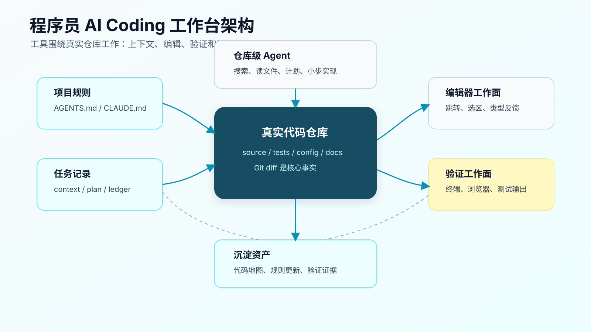
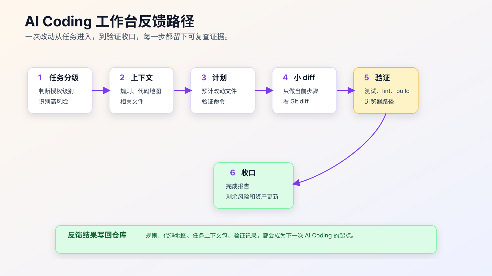

一个程序员的 AI Coding 工作台怎么搭
AI Coding 工作台不是把所有 AI 工具都装一遍，也不是给 App、CLI、IDE 分配一套固定职责。
更真实的情况是：不同程序员会有不同主工作面。有人先在 App 或 CLI 里聊需求、拆任务、跑工作流、开发验证；有人把 IDE 或 AI 编辑器当主工作面，只在验证和 Git 收口时回到终端。这些都成立。
工作台要解决的不是“哪个工具更正统”，而是让一次真实需求不要断在半路。
有用的工作台，要让你在真实仓库里拿到一个任务后，稳定完成这几件事：
- 找到正确上下文。
- 让 Agent 知道项目规则。
- 把需求拆成可审查的小步骤。
- 在本地跑验证命令。
- 用浏览器或接口确认用户可见行为。
- 看清 Git diff。
- 把完成证据和剩余风险留下来。
如果这些动作接不上，工具再多也只是入口很多。你会在 App、IDE、终端、浏览器之间来回复制信息，最后不知道 AI 到底读了什么、改了什么、验证了什么。
程序员的工作台应该反过来设计：先定义一条自己真的会用的开发路径，再把工具放到路径上。

工作台先解决三个问题
第一个问题：上下文从哪里来。
AI 不能凭空理解项目。它需要项目规则、代码地图、相关文件、历史问题、测试入口、运行命令。工作台要让这些信息容易被找到，而不是每次靠人临时回忆。
第二个问题：改动在哪里发生。
有些改动适合让仓库级 Agent 沿着任务工作流推进，有些适合在 IDE 里读调用链、打断点、审 diff 后局部改。工作台要让你随时看见 diff，不能让多个工具同时在同一批文件上乱改。
第三个问题：完成怎么证明。
AI 说完成没有意义。工作台要让测试、lint、build、浏览器、接口调用、日志和人工检查点变成可复查证据。
这三个问题一旦清楚，工具选择就简单了。
最小工作台长什么样
一套够用的个人工作台，可以先从你已经在用的链路开始。
1. 主工作面：App、CLI、IDE 或 AI 编辑器，选一个真实需求里最常用的入口
2. 代码审查和调试面：IDE / AI 编辑器
3. 终端证据面：Git、测试、构建、脚本、日志
4. 浏览器或接口验证面：页面路径、Network、截图、接口响应
5. 项目规则：AGENTS.md、CLAUDE.md、repository instructions
6. 任务记录：context package、plan、verification ledger
这些部分不要求绑定某个厂商，也不要求每次同时使用。你可以把 App / CLI 类 Agent 当主工作面，也可以把 IDE、AI 编辑器或编辑器内 AI 能力当主工作面；其他工具只补它不擅长的部分。
关键是每一部分都要有明确职责。
| 组成 | 职责 | 不该承担 |
|---|---|---|
| 主工作面 | 需求讨论、仓库侦察、计划、小步实现、验证收口 | 在证据不足时直接拍板 |
| IDE / 编辑器 | 阅读调用链、审查 diff、断点 debug、局部修改、类型反馈 | 大范围自主重构 |
| 补全 | 当前文件内加速输入 | 业务规则决策 |
| 终端 | Git、测试、构建、脚本、环境检查 | 只看 AI 口头结论 |
| 浏览器 | 用户可见行为验证 | 代替接口和状态检查 |
| 项目规则 | 稳定约束 Agent 行为 | 塞满一次性背景 |
| 任务记录 | 留下上下文和验证证据 | 写成形式化报告 |
工作台不是为了让流程变重，而是为了让每个动作有去处。
目录结构先建起来
建议先在自己的项目里放三类轻量文件。不是每个仓库都要完全一样，但思路可以复用。
.
├── AGENTS.md
├── docs/
│ ├── ai-coding/
│ │ ├── code-map.md
│ │ ├── task-context-template.md
│ │ └── verification-ledger-template.md
├── scripts/
│ └── ai/
│ ├── test-focused.sh
│ └── check-worktree.sh
└── package.json
AGENTS.md 放长期规则。比如安装命令、测试命令、禁止修改目录、新增依赖规则、完成报告要求。
docs/ai-coding/code-map.md 放项目结构索引。它不用很完整，但要让新对话知道入口、模块、测试、配置、生成文件在哪里。第一版可以由 Agent 或脚本生成，人只复核关键边界。
task-context-template.md 用来记录单次任务的目标、范围、相关文件、风险、验证命令。
verification-ledger-template.md 用来记录改完之后的命令、输出、证据和未覆盖风险。
scripts/ai/ 放可以重复运行的小脚本。不要为了 AI 写一堆复杂自动化，先放最常用的检查命令就够了。
如果你不想改现有项目目录，也可以把这些文件放在 docs/dev/、.github/ 或团队已有文档目录里。目录位置不是重点，重点是稳定可找。
AGENTS.md 只写长期有效规则
很多人写项目规则文件时，会把一次任务的背景也塞进去。这样很快就乱。
AGENTS.md 适合写长期有效的工程约束：
# Project Instructions
## Commands
- Install: `npm install`
- Focused test: `npm test -- <pattern>`
- Full test: `npm test`
- Lint: `npm run lint`
## Worktree
- Run `git status --short` before editing.
- Do not overwrite user changes.
- Do not edit generated files under `dist/`.
## Change Rules
- Bug fixes must stay scoped to the failing behavior.
- Do not add dependencies without approval.
- Do not mix refactor with behavior changes.
- If implementation requires a wider change, stop and explain.
## Verification
- Report exact commands and results.
- Explain what each command covers.
- List unverified risks before completion.
不要写这种规则：
- Please be careful.
- Improve code quality as much as possible.
- Use best practices.
- Make the project better.
这些话不会给 Agent 提供可执行约束。
长期规则应该来自真实项目经验。比如 Agent 曾经改过生成文件，就写“不要改生成文件”。它曾经为了修测试删除断言，就写“不要删除断言来让测试通过”。它曾经顺手加依赖，就写“新增依赖必须先确认”。
代码地图不要做成大而全文档
代码地图的目标不是介绍整个系统，而是帮 Agent 和人快速找到入口。
一份有效的代码地图可以很短：
# Code Map
## Runtime Entry
- `src/server.ts`: HTTP server bootstrap.
- `src/routes/`: route definitions.
- `src/modules/order/`: order domain logic.
## Tests
- `test/order/`: order behavior tests.
- `test/auth/`: auth refresh and session tests.
## Config
- `package.json`: scripts.
- `vite.config.ts`: frontend build.
- `.env.example`: local env keys.
## Do Not Edit Directly
- `dist/`
- `generated/`
- lock files unless dependency changes are approved.
## Common Commands
- `npm test -- order`
- `npm run lint`
可以用配套代码仓库 DavidDingXu/learn-ai-coding 的工具 module 先生成一版轻量地图：
cd learn-ai-coding/ai-coding-workflow-kit
node src/cli.js codemap --root .
如果要在任务开始前检查风险边界，可以再生成上下文审计报告：
cd learn-ai-coding/ai-coding-workflow-kit
node src/cli.js context-audit --root .
它会列出 Agent 应优先读取的文件、候选入口、测试和验证提示，以及 generated、dist、legacy 这类需要谨慎处理的路径。生成后不要直接当事实，要复核真实运行入口、业务模块、禁止修改目录和 focused verification。
代码地图最重要的是更新频率。它不需要覆盖所有文件，但关键入口变了要改。否则 Agent 会被过期地图带偏。
任务上下文包把一次需求固定下来
每次中等风险任务开始前，不要只给 Agent 一句话。写一个短上下文包。
# Task Context
## Objective
修复 session 过期后重新登录，第一次提交表单失败的问题。
## Scope
- 可能相关：`src/auth/`、`src/forms/submit.ts`
- 测试：`test/auth-refresh.test.ts`
- 不允许修改：登录接口协议、token 存储格式
## Evidence
- 错误日志：`401 refresh token missing`
- 复现路径：等待 token 过期，刷新页面，提交表单
## Verification
- `npm test -- auth-refresh`
- 浏览器复现路径手动验证
## Agent Mode
先读文件和出计划。人确认后再实现。
这个文件不需要正式。你也可以直接放在 issue、PR 描述或任务评论里。关键是让目标、范围、证据和验证命令同时出现。
配套工程的工具 module 里有生成基础上下文包的命令：
cd learn-ai-coding/ai-coding-workflow-kit
node src/cli.js task-context \
--title "修复 session 过期后首次提交失败" \
--files "src/auth/,test/auth-refresh.test.ts"
生成出来的内容只是起点。真正的工程判断需要你确认风险和边界。
终端要成为证据面
AI Coding 里，终端不是附属工具。它是证据面。
至少要把这些命令固定下来：
git status --short
git diff --stat
git diff
npm test
npm run lint
npm run build
具体命令按项目替换。Java 项目可能是：
./mvnw test
./mvnw -DskipTests package
Go 项目可能是：
go test ./...
go vet ./...
前端项目可能是：
npm test -- auth-refresh
npm run typecheck
npm run lint
不要只记命令名字，要知道每个命令覆盖什么风险。
git status --short 确认工作区有没有已有改动。
git diff --stat 看改动范围。
git diff 看语义。
focused test 看本次路径。
full test 看共享影响。
typecheck 看类型合同。
lint 看格式和静态规则。
build 看打包路径。
如果 Agent 只说“测试通过”，你要追问：哪个命令，在哪个目录，输出是什么，覆盖什么，没覆盖什么。
浏览器验证要接到工作流里
前端和交互任务不能只看测试。
浏览器验证至少要覆盖：
- 页面能否打开。
- 关键状态是否正确。
- 用户操作是否触发预期请求。
- 错误状态是否可见。
- 移动端或小屏是否变形。
- 截图中是否有文字重叠、遮挡、错位。
如果你用 Playwright，可以把 UI 验证写成可重复运行的命令：
npx playwright test auth-refresh.spec.ts
如果只是本地手动验证，也要留下步骤：
## Browser Verification
- URL: `http://localhost:3000/settings`
- Steps:
1. Login.
2. Wait for token expiration.
3. Refresh page.
4. Submit profile form.
- Expected:
- token refresh happens once
- form submission succeeds
- no duplicate error toast
不要让浏览器验证变成“我看了一下没问题”。用户可见行为应该能复现。
Git 是最后的事实来源之一
AI 写完后，最可靠的材料之一是 Git diff。
每次完成前，至少看：
git status --short
git diff --stat
git diff
如果是多步任务，建议每一步结束后就看一次 diff。不要等整个任务结束再看。
看 diff 时关注五件事：
- 是否改了计划外文件。
- 是否混入重构、格式化或无关清理。
- 是否删除测试或降低断言强度。
- 是否新增依赖、脚本、配置。
- 是否改变公共接口或数据结构。
Agent 的完成报告可以参考这个格式：
## Change Summary
- Added refresh-token retry before form submit.
- Kept login API contract unchanged.
## Files Changed
- `src/auth/refresh.ts`: add retry guard.
- `test/auth-refresh.test.ts`: add regression case.
## Verification
- `npm test -- auth-refresh`: passed, 6 tests.
- Browser manual path: passed.
## Residual Risk
- Did not test real third-party SSO provider.
这比“已修复”有用得多。
一次改动的反馈路径
工作台搭好后，一次任务应该能沿着下面这条路径走。

第一步，任务分级。
先判断是 AI 主导、AI 实现人控计划、人主导 AI 辅助，还是只做分析。这个判断决定后面的流程重量。
第二步，生成上下文。
让 Agent 读取项目规则、代码地图和任务上下文包。陌生模块先搜索和列读取文件，不直接改。
第三步，计划。
要求它给出预计修改文件、原因和验证命令。计划没有通过，不进入编辑。
第四步，小步实现。
CLI 或 IDE 只做当前步骤。实现后停下来，看 diff。
第五步，验证。
跑 focused test、lint、build 或浏览器路径。失败先分类，不直接继续改。
第六步，收口。
输出 change summary、commands、evidence、residual risk。必要时把规则或代码地图更新回仓库。
这条路径的好处是：无论用 Codex、Claude Code、Cursor 还是 Copilot，工作台的证据结构都不变。
不要把工作台搭成工具负担
工作台也会过度设计。
这些做法要避免：
- 为每个任务新建一套复杂项目。
- 为了 AI 写一堆没人维护的脚本。
- 把规则文件写成几十页。
- 每个小文案改动都要求完整上下文包。
- 为了“流程完整”强制跑无关全量命令。
- 让多个 Agent 同时改同一批文件。
工作台应该按风险伸缩。
低风险任务：
IDE 修改 -> git diff -> focused test 或人工检查
中等风险任务：
任务上下文 -> CLI 侦察 -> 计划 -> 小 diff -> focused test -> diff review
高风险任务：
需求澄清 -> 业务规则确认 -> 规格或设计 -> 分步实现 -> 多层验证 -> 人工审查
越高风险，越需要证据；越低风险，越要避免形式主义。
常见坑
坑一：规则文件越写越长。
规则文件应该是长期有效约束，不是任务记录。一次性背景放到任务上下文包里。过期规则要删，否则 Agent 会被旧信息污染。
坑二：代码地图生成后没人更新。
代码地图过期比没有地图更危险。入口、测试命令、生成目录变了，要及时改。可以把更新代码地图作为模块改造后的收尾动作。
坑三：终端命令只为给 AI 看。
命令是给人和机器共同看的证据。不要只跑一个看起来会绿的命令。验证命令要覆盖本次风险。
坑四：浏览器验证没有记录。
“页面看起来没问题”无法复查。至少留下 URL、操作步骤、期望结果。重要页面最好有截图或 Playwright 测试。
坑五：多个工具抢同一个 diff。
CLI Agent、IDE Agent、补全同时改同一批文件，很容易造成上下文冲突。一次只让一个工作面承担主要编辑，另一个用于审查或验证。
你可以今天就搭的版本
先不要做复杂系统。建三个文件就够了。
第一个：AGENTS.md
# Project Instructions
## Commands
- Test: `npm test`
- Lint: `npm run lint`
- Build: `npm run build`
## Rules
- Run `git status --short` before editing.
- Do not add dependencies without approval.
- Do not edit generated files.
- Keep bug fixes scoped.
## Completion Report
- Changed files.
- Commands run.
- Result.
- Residual risk.
第二个：docs/ai-coding/code-map.md
# Code Map
## Entry
- `src/main.ts`: main runtime entry
## Tests
- Focused test: `npm test -- <module>`
## Do Not Edit
- `dist/` and generated client directories
第三个：docs/ai-coding/task-context-template.md
# Task Context
## Objective
## Scope
## Constraints
## Verification
## Agent Mode
然后用一次真实小需求试跑。不要挑最复杂的需求，也不要挑纯文案。选一个有代码、有测试、有一点风险但能本地验证的任务。
跑完后看四件事：
- Agent 是否读对文件。
- diff 是否小。
- 命令是否能证明结果。
- 有哪些规则值得写回。
这比一次性搭完整体系更有效。
常见问题
没有测试的老项目怎么搭工作台？
先不要追求自动化完整。把可复查动作写出来：手动复现步骤、接口调用、日志观察、页面截图、数据库只读查询。后续再逐步补测试。
项目很大，代码地图会不会维护不动？
不要做全量地图。只维护运行入口、核心模块、测试命令、配置、生成文件和禁止修改目录。按模块逐步补。
规则文件应该全局一份还是每个目录一份？
先全局一份。只有当目录差异明显，例如前端、后端、移动端命令完全不同，再考虑分目录规则。规则越多，维护成本越高。
我用 Cursor 或 Copilot，还需要 CLI Agent 吗？
不一定。当前文件小改可以留在 IDE。涉及仓库搜索、计划、命令验证和多文件修改时，再切到 CLI 工作面。
工作台会不会让 AI Coding 变慢？
低风险任务不应该变慢。中高风险任务看起来多了几个步骤，但减少的是返工、误改和不可审查 diff。真实项目里，这通常更快。
把工作台放进个人习惯
一套工作台要能长期用，关键不是文件齐不齐，而是你能不能形成固定动作：
开始前：任务分级 + 上下文
实现前：计划 + 边界
实现中：小 diff + 单一编辑面
完成前：命令 + 浏览器/接口验证 + diff
完成后：验证记录 + 规则更新
这些动作一旦固定，后续再讲 SDD、OpenSpec、Skill、Superpowers、MCP、多 Agent，才有落点。否则新工具只会让入口变多，证据更散。
工作台搭起来以后，还要解决一个具体问题：App、CLI、IDE 什么时候切换、怎么交接上下文、怎么避免多个 Agent 互相打架。
工作台不是工具清单
很多人搭工作台，会从“我要装哪些工具”开始。这个顺序容易跑偏。
真正要先定的是四个出口：
1. 任务从哪里进入。
2. 代码由哪个工作面主要编辑。
3. 验证结果在哪里留下证据。
4. 规则和经验最后沉淀到哪里。
如果这四个出口不清楚，工具越多越乱。
例如一个前端 bug：
入口：任务卡写清楚页面、复现步骤、限制范围。
主工作面：能访问仓库、改文件、跑测试并留下证据的 Agent 负责推进。
审查调试面：IDE 读调用链、审 diff、必要时断点 debug。
验证证据：浏览器截图、接口响应、测试命令输出。
沉淀位置：如果发现规则缺口，写回 AGENTS.md 或验证模板。
另一个局部类型修复：
入口：IDE 选中报错位置。
主编辑面：IDE 补全或 Agent 修改当前文件。
验证证据：typecheck 或 focused test。
沉淀位置：通常不需要沉淀，除非重复出现同类错误。
工作台的标准不是“工具全”，而是每次任务都能回答：谁在改、改到哪里、怎么验、验完留下些什么。
最小工作台的退出标准
一个最小工作台搭好以后，可以用一次真实任务验证。
不是看文档是否齐全，而是看这几个结果：
Agent 能读到项目规则。
Agent 能说出实际读取文件。
Agent 能给出小步计划。
主工作面没有同时和另一个 Agent 抢同一批文件。
验证命令能运行，失败时能分类。
完成报告里有 diff、命令、结果、未覆盖路径。
如果这些做不到，继续装插件没有意义。
反过来，如果这些已经跑通，就算工具只有 CLI、IDE 和浏览器，也已经能支撑大多数个人 AI Coding 任务。
工作台出问题时先查哪里
工作台跑不顺，不一定是工具不够。
先查三个地方。
第一，入口是否混乱。任务是从聊天记录、issue、PR 评论、临时口头需求里来的，如果没有整理成目标、范围和验证，Agent 很难稳定执行。
第二，编辑面是否冲突。CLI Agent、IDE 补全、另一个聊天窗口同时改同一批文件，最终 diff 会混在一起。一次任务只保留一个主编辑面，其它工作面只做审查、预览或验证。
第三，验证出口是否缺失。如果不知道最终要跑什么命令、看哪个页面、查哪条日志，Agent 就会选择它最容易完成的验证。
很多“AI 不稳定”的问题，根因在这里。不是模型不会写代码，而是工作台没有把入口、编辑和验证收成一条线。
先用一次任务校准工作台
工作台搭完以后，不要马上拿最大需求试。
选一个真实但可控的任务，例如修一个 CLI 参数、补一个接口边界测试、改一个表单校验。这个任务要满足两个条件：涉及真实代码，并且能本地验证。
试运行时只看三件事。
第一，Agent 是否能从规则文件和任务卡里读到同一组约束。如果规则写“不新增依赖”，任务执行时仍然准备安装包，说明规则没有进入计划。
第二，主编辑面是否稳定。如果 CLI 已经在改文件，IDE 补全就不要同时改同一段逻辑。工具之间可以协作，但不能抢同一个 diff。
第三，完成证据是否足够复查。只有“已完成”不算。至少要有改动文件、命令输出、未覆盖路径和必要的截图或接口结果。
这次试运行结束后，只沉淀一个最有价值的改进。可能是一条规则，也可能是一个验证命令，或者是删掉一段误导 Agent 的旧说明。一次只改一个点，工作台才会稳定变好。
可复查资料
- OpenAI Codex
AGENTS.md指南：https://developers.openai.com/codex/guides/agents-md - OpenAI Codex CLI：https://developers.openai.com/codex/cli
- Anthropic Claude Code memory：https://code.claude.com/docs/en/memory
- GitHub Copilot repository instructions：https://docs.github.com/en/copilot/how-tos/copilot-on-github/customize-copilot/add-custom-instructions/add-repository-instructions
- Playwright 官方文档：https://playwright.dev/docs/intro